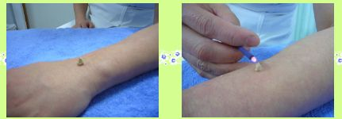
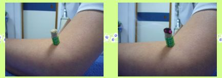
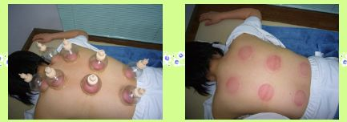

お灸は、身体の表面、主に経穴（ツボ）にあたる部位や反応点（特定の筋や腱・痛みの強い部位）に“もぐさ”を 据えます。また、温灸といって不燃性の紙の筒に“もぐさ”を乗せて、皮膚に“もぐさ”が直接触れないようにするやり方も あります。この場合は、ポカポカと心地良い温熱刺激を得る事が出来ます。


吸角とは、球状の器具を用いて皮膚に密着させ、その中を真空にして血行の改善・筋肉をほぐす事を目的としています。 例としまして、畑の硬い土を踏み潰しても耕せません。そこで鍬（クワ）を用いて土を掘り起こして耕すのと同様に、 硬くなった筋肉を、あん摩・指圧・マッサージの押圧刺激でほぐす事は容易ではありません。そこで吸角を用いて筋肉を引っ張りあげる事で、 血行を良くし、筋肉の緩和を望みます。しかし、吸角は人によって個人差がありますが、丸いアザの様な痕が1週間程度残る事もありますので、 患者様の同意を得た上で行ないます。
